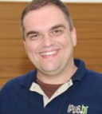

Programação
O SBSeg 2012 será realizado no Centro de Convenções do Pestana Hotel Curitiba. A programação do SBSeg 2012 é composta de sessões técnicas, minicursos, palestras e tutoriais com convidados nacionais e internacionais e demais eventos associados.
- WTICG - Workshop de Trabalhos de Iniciação Científica
- CTDSeg - Concurso de Teses e Dissertações
- WGID - Workshop de Gestão de Identidades Digitais
- WFC - Workshop de Forense Computacional
| 19/11/2012 (Segunda-feira) |
20/11/2012 (Terça-Feira) |
21/11/2012 (Quarta-Feira) |
22/11/2012 (Quinta-feira) |
|||||||
|---|---|---|---|---|---|---|---|---|---|---|
| 08:00-08:30 | inscrições | inscrições | inscrições | inscrições | ||||||
| 08:30-10:00 | WTICG | CTD | MC1 | ST1 | ST2 | ST5 | ST6 | WGID | WFC | MC3 |
| 10:00-10:30 | coffee break | coffee break | coffee break | coffee break | ||||||
| 10:30-11:30 | WTICG | CTD | MC1 | PI1 | TI2 | WGID | WFC | MC3 | ||
| 11:30-12:30 | PN2 | |||||||||
| 12:30-14:30 | almoço | almoço | almoço | almoço | ||||||
| 14:30-15:15 | WTICG | CTD | MC2 | TI1 | ST7 | ST8 | WGID | WFC | MC4 | |
| 15:15-16:00 | PN1 | |||||||||
| 16:00-16:30 | coffee break | coffee break | coffee break | coffee break | ||||||
| 16:30-17:30 | WTICG | CTD | MC2 | ST3 | AC | PI2 | WGID | WFC | MC4 | |
| 17:30-18:30 | ST4 | |||||||||
| 18:30-19:00 | ||||||||||
| 19:00-19:30 | abertura | CESeg/SBC | ||||||||
| 19:30-21:00 | coquetel | Jantar do Evento | ||||||||
| 21:00-23:00 | ||||||||||
Legenda:
- WTICG - Workshop de Trabalhos de Iniciação Científica e de Graduação
- WGID - Workshop de Gestão de Identidades Digitais
- TI/PI - Tutorial/Palestra Internacional
- PN - Palestra Nacional
- ST/AC - Sessão Técnica/Artigos Curtos
- MC - Minicurso
- WFC - Workshop de Forense Computacional
- CTD - Concurso de Teses e Dissertações
- CESeg/SBC - Comissão Especial de Segurança da Informação da SBC
Caderno de Programação
Acesse o caderno de programação disponivel online.
Anais do SBSeg 2012
Acesso os Anais do SBSeg 2012 disponível online.
Programação detalhada - Palestras e Tutoriais
| Tuesday, November 20, 2012 | |
|---|---|
| 10:30-12:30 | PI1: Internet Monitoring via DNS Traffic Analysis |
| Wenke Lee, Georgia Institute of Technology Abtract: In recent years miscreants have been leveraging the Domain Name System (DNS) to build Internet-scale malicious network infrastructures for malware command and control (C&C). In talk, I will describe our DNS traffic analysis work that aims to identify the C&C domains and hence the infected hosts, and gain insights into malware operations. First, I will describe Kopis, a system that passively monitors DNS traffic at the upper levels of the DNS hierarchy, analyzes global DNS query resolution patterns, and identifies domains likely associated with malware activities. Kopis has high detection rates (e.g., 98.4%) and low false positive rates (e.g., 0.3% or 0.5%). In addition, Kopis is able to detect new malware domains days or even weeks before they appear in public blacklists and security forums. For example, it discovered the rise of a previously unknown DDoS botnet based in China in 2010. Second, I will present a study of the DNS infrastructure used by mobile apps. Using traffic ob tained from a major US cellular provider as well as a major US non-cellular Internet service provider, we identified the DNS domains looked up by mobile apps, and analyzed information related to the Internet hosts pointed to by these domains. We found that the DNS infrastructure used by mobile apps is part of the infrastructure used by applications in non-cellular world; in other words, the mobile web is part of the Internet. We saw evidence that the criminals behind mobile malware may be the same as those behind botnets and malware in non-cellular world: about 48,098 hosts known to be associated with malicious activities are also pointed to by unknown (likely malicious) domains looked up by mobile apps. We found that the network characteristics of major, widespread mobile threats are very similar to those of non-cellular botnets. These findings that malicious mobile apps and non-cellular malware have commonalities in DNS infrastructure and network characteristics, and therefore, we should develop a DNS monitoring and reputation system for cellular carriers similar to the ones already developed for non-cellular ISPs. Presentation slides |
|
| 14:30-15:15 | TI1: Personalized Search Under Attacks |
| Wenke Lee, Georgia Institute of Technology Abtract: Most users access the web via a search engine. A major development in search algorithms in the last few years is the use of Personalized Search, promised to deliver the data and services most relevant to a user. While many businesses have benefited from personalized search, so do the attackers. In this talk, I will discuss the new characteristics of these attacks. In particular, instead of attacking the search engine software, attackers are able to manipulate the input to search engines to influence the output (i.e., search results presented to a user). For example, negative comments about a business can be "drowned out" to continue to scam customers. I will also discuss some new defenses, in particular, how to increase the cost of the attackers. Presentation slides |
|
| 15:15-16:00 | PN1: Segurança em redes IPv6 |
| Antonio M. Moreiras, NIC.BR Resumo: A migração do IPv4 para o IPv6 é uma realidade na Internet. Esta apresentação abordará de forma pragmática e realista as implicações relacionadas à segurança, nas redes IPv6. Existem muitos mitos em relação ao IPv6 ser mais seguro. A ausência de NAT e uma viabilidade melhor para o uso do IPSEC são exemplos de avanços que não devem ser desconsiderados. No entanto, também há vulnerabilidades: algumas comuns ao universo do IPv4, outras novas. No final, o nível de segurança obtido é basicamente o mesmo, com vulnerabilidades e técnicas de proteção similares, mas com diferenças que devem ser conhecidas e levadas em consideração. |
|
| Wenke Lee | |
|
http://wenke.gtisc.gatech.edu Wenke Lee is a Professor in the School of Computer Science, College of Computing, Georgia Institute of Technology. He received a Ph.D. in Computer Science from Columbia University in 1999. His research interests include systems and network security and applied cryptography. He is also the Director of the Georgia Tech Information Security Center (GTISC). |
|
| Antonio M. Moreiras | |
 NIC.BRAntonio M. Moreiras é engenheiro eletricista e mestre em engenharia pela POLI/USP, com MBA pela UFRJ. Estudou também Governança da Internet na Diplo Foundation e na SSIG 2010. Trabalha atualmente no NIC.br, onde está envolvido em projetos para o desenvolvimento da Internet no Brasil, como a disseminação do IPv6, a disponibilização da Hora Legal Brasileira via NTP e estudos sobre a Web. |
|
| Wednesday, November 21, 2012 | |
| 10:30-11:30 | TI2: Delivering New Platform Technologies |
| George Cox, Intel Corporation Abtract: Dreaming up a new technology is just the first of many steps in getting the technology developed, making it deployable, delivering it broadly into the market place, getting it widely enabled, and having it be effectively used. In this talk, we discuss this the various steps required to successfully carry out such a process using Intel’s new RdRand/DRNG technology as an example. Presentation slides |
|
| 11:30-12:30 | PN2: Computação Forense: Pesquisas Atuais e Perspectivas |
| Itamar de Almeida Carvalho, Polícia Federal Resumo: A apresentação traz os principais desafios encontrados no trabalho dos peritos criminais, um panorama geral das pesquisas realizadas recentemente por estes profissionais e alguns desafios da área da Computação Forense. |
|
| 16:30-18:30 | PI2: Solving The Platform Entropy Problem |
| George Cox, Intel Corporation Abtract: This talk will present the need for entropy in Cryptography and the problem of generating adequate streams in hardware, highlighting some recent attacks to software-based implementations. I go on with TRNG, a breakthrough that made a hardware implementation viable, and present DRNG, Intel's implementation available through the RdRand instruction, and how the module can be embedded on processor designs. Finally, I also show performance results in terms of throughput, response time and reseed frequency. Presentation slides |
|
| George Cox | |
|
Intel Corporation During his 38 year career at Intel, George has lead research and development teams delivering processors, I/O subsystems, supercomputers, interconnects, and security elements. His current Digital Random Number Generator (DRNG) work is the second Intel RNG that his teams have deployed in product. By delivering this DRNG (and its instruction interface – RDRAND), George believes that we can make a fundamental, long term, platform security problem, that is, the absence of a high quality/high performance source of computational entropy, just “go away”. He looks forward to attacking other such low level, fundamental, long term, platform security problems. |
|
| Itamar de Almeida Carvalho | |
|
Polícia Federal Itamar Carvalho é Perito Criminal Federal da área de Informática, atualmente lotado no Serviço de Perícias em Informática do Instituto Nacional de Criminalística da Polícia Federal. É Bacharel em Ciência da Computação pela Universidade Federal do Ceará e Mestre em Informática Forense e Segurança da Informação pela Universidade de Brasília. |
|
Programação Detalhada - Sessões técnicas
| Tuesday, November 20, 2012 | |
|---|---|
| 08:30-10:00 | Sessão Técnica 1 (ST1) - Virtualização |
| Redes Virtuais Seguras: Uma Nova Abordagem de Mapeamento para Proteger contra Ataques de Disrupção na Rede Física Rodrigo Ruas Oliveira, UFRGS, Brasil Leonardo Bays, Universidade Federal do Rio Grande do Sul, Brasil Daniel Marcon, Universidade Federal do Rio Grande do Sul (UFRGS), Brasil Miguel Neves, UFRGS, Brasil Luciana Buriol, Universidade Federal do Rio Grande do Sul, Brasil Luciano Paschoal Gaspary, Marinho Barcellos, UFRGS, Brasil. |
|
| Um Modelo para Mapeamento Ótimo de Redes Virtuais com Requisitos de Segurança Leonardo Bays, Universidade Federal do Rio Grande do Sul, Brasil Rodrigo Ruas Oliveira, UFRGS, Brasil Luciana Buriol, Universidade Federal do Rio Grande do Sul, Brasil Marinho Barcellos, Luciano Paschoal Gaspary, UFRGS, Brasil. |
|
| Uma arquitetura para auditoria de nível de serviço para computação em nuvem Juliana Bachtold, Pontifícia Universidade Católica do Paraná - PUCPR, Brasil Altair Santin, Pontifícia Universidade Católica do Paraná (PUCPR), Brasil Maicon Stihler, Arlindo L. Marcon Jr., PUCPR, Brasil Eduardo Viegas, Pontifícia Universidade Católica do Paraná - PUCPR, Brasil. |
|
| 08:30-10:00 | Sessão Técnica 2 (ST2) - Criptografia e PKI (1) |
| Aprimoramento de Esquema de Identificação Baseado no Problema MQ Fábio Monteiro, Denise Goya, Universidade de São Paulo, Brasil Routo Terada, University of Sao Paulo, Brazil. |
|
| Chi-square Attacks on Block-Cipher based Compression Functions Daniel Santana de Freitas, UFSC, Brasil Jorge Nakahara Junior, ---, Brasil. |
|
| Impossible-Differential Attacks on block-cipher based Hash and Compression Functions using 3D and Whirlpool Daniel Santana de Freitas, UFSC, Brasil Jorge Nakahara Junior, ---, Brasil. |
|
| 16:30-17:30 | Sessão Técnica 3 (ST3) - Detecção e Prevenção de Ataques e Vulnerabilidades (2) |
| SDA-COG Sistema de Detecção de Ataques para Rede de Rádios Cognitivos Joffre Filho, Universidade Federal do Rio de Janeiro, Brasil Luiz Rust, Inmetro, Brasil Raphael Machado, National Institute of Metrology, Standardization and Industrial Quality, Brazil Luci Pirmez, Universidade Federal do Rio de Janeiro, Brasil. |
|
| Detecção de variações de malware metamórfico por meio de normalização de código e identificação de subfluxos Marcelo Cozzolino, Departamento de Polícia Federal do Brasil, Brasil Gilbert Martins, Instituto de Ensino Superior FUCAPI, Brasil Eduardo Souto, Universidade Federal de Amazonas - UFAM, Brasil Flavio Deus, Universidade de Brasília, Brasil. |
|
| 17:30-18:30 | Sessão Técnica 4 (ST4) - Criminalística |
| Identificação de Autoria de Documentos Eletrônicos Walter Oliveira Jr, Pontifícia Universidade Católica do Paraná, Brasil Edson Justino, Pontifícia Universidade Católica do Paraná, Brasil Luiz Oliveira, UFPR, Brasil. |
|
| Modelagem de Aliciamento de Menores em Mensagens Instantâneas de Texto Priscila Santin, Pontifícia Universidade Católica do Paraná, Brasil Cinthia Freitas, PUCPR, Brasil Emerson Paraiso, Pontifícia Universidade Católica do Paraná, Brasil Altair Santin, Pontifícia Universidade Católica do Paraná / Pontifical Catholic University of Parana (PUCPR), Brazil. |
|
| 16:30-18:30 | Sessão Artigos Curtos (AC) |
| Um Modelo de Segurança e Privacidade para Redes Sociais Móveis Aplicadas à Área da Saúde Jesseildo Gonçalves, Ariel Teles, Francisco José Silva, Universidade Federal do Maranhão, Brasil. |
|
| Identity Management Requirements in Future Internet Jenny Torres, Université Pierre et Marie Curie - Paris 6, France Ricardo Tombesi Macedo, Michele Nogueira, Universidade Federal do Paraná, Brasil Guy Pujolle, Université Pierre et Marie Curie - Paris 6, France. |
|
| IPSFlow Uma Proposta de IPS Distribuído para Captura e Bloqueio Seletivo de Tráfego Malicioso em Redes Definidas por Software. Fábio Nagahama, Fernando Farias, Universidade Federal do Pará, Brasil Elisangela Aguiar, Universidade da Amazônia / Serviço Federal de Processamento de Dados SERPRO / Universidade Federal, Brasil Eduardo Cerqueira, Antônio Abelém, Universidade Federal do Pará - UFPA, Brasil Luciano Paschoal Gaspary, Lisandro Zambenedetti Granville, UFRGS, Brasil. |
|
| Avaliação do Classificador Artmap Fuzzy em redes 802.11 com criptografia Pré-RSN (WEP e WPA) Nelcileno Araujo, Universidade Federal de Mato Grosso, Brasil Ruy de Oliveira, Instituto Federal de Educação, Ciência e Tecnologia de Mato Grosso, Brasil Ailton Shinoda, Universidade Estadual Paulista - UNESP, Brasil Ed' Wilson Ferreira, IFMT - Instituto Federal de Mato Grosso, Brasil Valtemir do Nascimento, Instituto Federal de Educação, Ciência e Tecnologia de Mato Grosso, Brasil. |
|
| Arquitetura de sistema integrado de defesa cibernética para detecção de botnets Sérgio Cardoso, Ronaldo Salles, Instituto Militar de Engenharia, Brasil. |
|
| Uma Arquitetura para Mitigar Ataques DDoS em Serviços Web sob Nuvem Cinara Terezinha Menegazzo, Universidade do Estado de Santa Catarina, Brasil Fernando Bernardelli, Universidade Federal do Paraná, Brasil Fernando Gielow, Nadine Pari, UFPR, Brasil Aldri dos Santos, Universidade Federal do Paraná, Brasil. |
|
| Wednesday, November 21, 2012 | |
| 08:30-10:00 | Sessão Técnica 5 (ST5) - Criptografia e PKI (2) |
| Segurança do bit menos significativo no RSA e em curvas elípticas Dionathan Nakamura, Universidade de São Paulo, Brasil Routo Terada, University of Sao Paulo, Brazil. |
|
| Universally Composable Committed Oblivious Transfer With A Trusted Initializer Adriana Pinto, Anderson Nascimento, Bernardo David, Universidade de Brasília, Brasil Jeroen Graaf, Universidade Federal de Minas Gerais, Brasil. |
|
| Cleaning up the PKI for Long-term Signatures M. Vigil, Technische Universtaet Darmstadt, Germany Ricardo Custódio, UFSC, Brasil. |
|
| 08:30-10:00 | Sessão Técnica 6 (ST6) - Mitigação e Tolerância a Ataques |
| Mitigando Ataques de Egoísmo e Negação de Serviço em Nuvens via Agrupamento de Aplicações Daniel Marcon, Universidade Federal do Rio Grande do Sul (UFRGS), Brasil Miguel Neves, Rodrigo Ruas Oliveira, UFRGS, Brasil Luciana Buriol, Universidade Federal do Rio Grande do Sul, Brasil Luciano Paschoal Gaspary, Marinho Barcellos, UFRGS, Brasil. |
|
| Um Esquema Cooperativo para Análise da Presença de Ataques EUP em Redes Ad Hoc de Rádio Cognitivo Julio Soto, Universidade Federal do Paraná - NR2, Brasil Saulo Queiroz, Federal University of Parana, Brazil Michele Nogueira, Universidade Federal do Paraná, Brasil. |
|
| Usando Criptografia de Limiar para Tolerar Clientes Maliciosos em Memória Compartilhada Dinâmica Eduardo Alchieri, UnB, Brasil Alysson Bessani, University of Lisbon, Faculty of Sciences, Portugal Joni da Silva Fraga, UFSC, Brasil. |
|
| 14:30-16:00 | Sessão Técnica 7 (ST7) - Segurança Baseada em Hardware e Controle de Acesso |
| A Secure Relay Protocol for Door Access Control Hans Hüttel, University of Aalborg, Denmark Erik Wognsen, Mikkel Normann Follin, Marcus Calverley, Henrik Søndberg Karlsen, Bent Thomsen, Department of Computer Science, Aalborg University, Denmark. |
|
| Modified Current Mask Generation (M-CMG): An Improved Countermeasure Against Differential Power Analysis Attacks Daniel Mesquita, Universidade Federal de Uberlândia, Brasil Hedi Besrour, Machhout Mohsen, Tourki Rached, Monastir University, Tunisia. |
|
| Uma arquitetura de segurança para medidores inteligentes - verificação prática de dados de energia multi-tarifada Sérgio de Medeiros Câmara, Universidade Federal do Rio de Janeiro, Brasil Raphael Machado, National Institute of Metrology, Standardization and Industrial Quality, Brazil Luci Pirmez, Universidade Federal do Rio de Janeiro, Brasil Luiz Rust, Inmetro, Brasil. |
|
| 14:30-16:00 | Sessão Técnica 8 (ST8) - Detecção e Prevenção de Ataques e Vulnerabilidades (1) |
| Avaliação da Sensibilidade de Preditores de Suavização Exponencial na Detecção de Ataques de Inundação Nícolas Silva, Ronaldo Salles, Instituto Militar de Engenharia, Brasil. |
|
| Análise de Métodos de Aprendizagem de Máquina para Detecção Automática de Spam Hosts Renato Moraes Silva, Universidade Estadual de Campinas - UNICAMP, Brasil Tiago Almeida, Federal University of Sao Carlos, Brazil Akebo Yamakami, Universidade Estadual de Campinas, Brasil. |
|
| Dynamic Detection of Address Leaks Gabriel Silva Quadros, Rafael Martins, UFMG, Brasil Fernando Quintao Pereira, Universidade Federal de Minas Gerais, Brasil. |
|
Livro de Minicursos
Os minicursos do SBSeg 2012 estão disponiveis online.Programação Detalhada - Minicursos
| Monday, November 19, 2012 | |
|---|---|
| 08:30-12:30 | Minicurso 1 (MC1) |
| Análise de vulnerabilidades em Sistemas Computacionais Modernos: Conceitos, Exploits e Proteções Mateus Ferreira (UFAM), Eduardo Feitosa (UFAM), Thiago Rocha (UFAM), Gilbert Martins (Instituto de Ensino Superior FUCAPI), Eduardo Souto (UFAM)Resumo: O crescimento da ocorrência de ataques cibernéticos tem elevado o interesse da comunidade científica e os investimentos de organizações na busca por novas soluções que sejam capazes de lidar com as técnicas de invasão de sistemas computacionais. Entre essas técnicas, o desenvolvimento de exploits artefatos cuidadosamente construídos para explorar falhas vem sendo destacado por diversos autores como uma das principais armas dos atacantes nas últimas décadas. À medida que esses códigos maliciosos foram se difundindo, mecanismos de proteção foram incorporados aos sistemas operacionais modernos, com o intuito de barrar essas investidas. Em contrapartida, novas técnicas de desenvolvimento de exploits têm sido elaboradas a fim de burlar as barreiras implementadas. Por esse motivo, o desenvolvimento desses artefatos tem sido incorporado também por analistas de segurança às metodologias de testes de penetração, como estratégia para prevenção de ataques. Assim, ao destacar as principais técnicas atualmente empregadas no desenvolvimento de exploits e os métodos usados no comprometimento de ambientes protegidos, este minicurso permite a ampla difusão das estratégias comumente utilizadas pelos atacantes para explorar softwares defeituosos. Consequentemente, contribui também para a pesquisa de novos mecanismos de defesa, a fim de reduzir a escalada do número de explorações de sistemas e minimizar os prejuízos delas decorrentes. |
|
| 14:30-18:30 | Minicurso 2 (MC2) |
| Introdução à Segurança de Dispositivos Móveis Modernos - Um Estudo de Caso em Android Alexandre Braga (CPqD), Erick Nascimento (CPqD), Lucas Palma (CPqD), Rafael Rosa (CPqD)Resumo: Os dispositivos móveis, em particular os smartphones e os tablets, são os protagonistas de uma revolução silenciosa, caracterizada pelo uso de dispositivos com grande poder de processamento e conectividade em ambientes públicos e privados. A agregação de tais características à ampla difusão de dispositivos móveis, trouxe uma série de ameaças, tornando necessário um estudo de novas técnicas e ferramentas de segurança. Este curso tem a finalidade de esclarecer estes assuntos, abordando os aspectos de segurança da informação relacionados aos dispositivos móveis, exibindo ameaças e vulnerabilidades nesta temática. |
|
| Thursday, November 22, 2012 | |
| 08:30-12:30 | Minicurso 3 (MC3) |
| Segurança em Redes Centradas em Conteúdo: Vulnerabilidades, Ataques e Contramedidas Igor C. G. Ribeiro (UFF), Flavio Q. Guimarães (UFF), Juliano Kazienko (UFF), Antonio Rocha (UFF), Pedro Velloso (UFF), Igor Moraes (UFF), Célio Vinicius Neves de Albuquerque (UFF)Resumo: Este minicurso tem como objetivo apresentar um estudo teórico das melhorias de segurança, vulnerabilidades, possíveis ataques e contramedidas no âmbito da arquitetura CCN. Tal estudo é realizado com foco nos serviços de segurança, como privacidade, integridade, disponibilidade e proveniência dos dados trocados na rede. Adicionalmente, será demonstrado, através de experimentos práticos com o CCNx, uma maneira de explorar as vulnerabilidades presentes na arquitetura CCN através de um dos ataques apresentados neste trabalho. Ao final do minicurso, os participantes terão uma visão crítica a respeito da segurança dessa nova arquitetura para a Internet do Futuro. |
|
| 14:30-18:30 | Minicurso 4 (MC4) |
| Encriptação Homomórfica Eduardo Morais (Unicamp), Ricardo Dahab (Unicamp)Resumo: Em 1978, Rivest, Adleman e Dertouzos [RAD78] sugeriram a construção de homomorfismos secretos - privacy homomorphisms - como forma de prover um mecanismo de proteção para computação sobre dados sigilosos. O problema permaneceu em aberto até recentemente, quando em 2009 Craig Gentry [Gen09] o resolveu sugerindo a utilização de reticulados ideais na construção de um criptossistema completamente homomórfico. Infelizmente a proposta de Craig Gentry não é eficiente o suficiente para ser usada na prática, mas inúmeros trabalhos têm contribuído para que a eficiência dos algoritmos se torne cada vez maior. Neste minicurso serão estudados os esquemas recentemente propostos por Craig Gentry, primeiramente considerando a versão mais simples, que usa números inteiros e em seguida estudando o esquema baseado em reticulados ideais. |
|
Local do Evento
Pestana Hotel Curitiba
Rua Comendador Araújo, 499; 80420-000; Batel
Promoção

Organização


Apoio